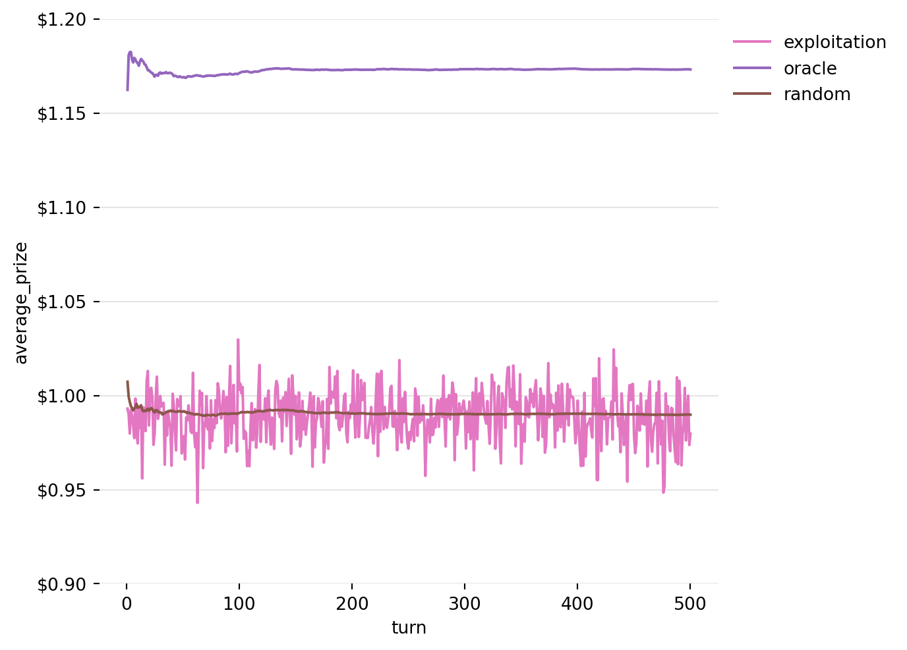

Decisions are hard. We can’t see how things will turn out, and we never have all the information we need to make the best decision right now. However, there are systematic ways to work through the choices we make to give us a better chance of coming out on top.
One way to view things is through the lens of reinforcement learning. This is a flexible framework for decision making that assumes there is some environment out there to act on, and whatever we decide to do the environment gives us some feedback in the form of a reward or a punishment. Through these interactions, we can learn a better decision making rule.
There is a little more to the framework, such as the idea of a “state” that can impact the results of our actions, and there are diferent ways of setting up a model for analysis. But, we will ignore that for now for the classic model I will talk about below: the multi-armed bandit. The way I set this up allows for the following types of decisions:
We face a repeated decision between a number of options, and can choose only one on each turn. There are many turns.
We don’t know the expected value of each choice. We only find out the reward we get for the option we choose, and the only information we have is the record of choices we made and the rewards we got for those choices.
The expected value of each option can change over time, and the actual reward we get for choosing an option is noisy (i.e. randomly distributed around the expected value), i.e. good options sometimes provide bad results.
You could apply the above to decisions such as:
Which restaurant/barbershop should I go to?
Which vendor should I buy from?
Who is the best person to send into a sales pitch?
In all the above, we have some number of options, and we keep gong back to make these decisions repeatedly. Each option can generally get better or worse over time as staff get more experienced or leave, but we generally don’t know what impact that will have until we get to see how it plays out, and each one of them can have days where they uncharacteristically knock it out of the park or just do a terrible job.
Besides being actually useful, this type of decision is also nice because it’s relatively simple and it demonstrates some really nice elements of a decision-making strategy, which are the main takeaways from this post:
Exploration v. Exploitation: a really key concept to grasp. Do you explore new restaurants every weekend like an epicurean nomad, or do you decide you’ve found one that’s good enough (exploiting what you already know)? Spoiler: you try to balance both.
Bias Towards Recency: Things change all the time - you should change with them.
Optimistic Initial Expectations: Believe it or not, until you get some experience you’re better off assuming the best.
The Multi-Armed Bandit Model
The actual model we will look at to demonstrate the idea is called the “multi-armed bandit”1, a classic model in reinforcement learning.
Using a gambling machine allows us to bring this model squarely into the realm of probabilities, and it adds a natural system of rewards, i.e. prizes. So say, for example, you walk into a casino and start playing 3 machines. You go from one to the other over the course of 6 turns and get the following prizes.
We are in a casino with 3 slot machines (one-armed bandits).
We take 500 turns, deciding which machine to play on each turn.
It costs $1.00 to play each turn.
Expected reward can change over time, but in the long run is $0.99.
The reward on a given play is exponentially distributed around the expected value.
Modelling the prizes won by a player as an exponential distribution seems appropriate because it will give us many small wins and a few big wins. I thought it would also be good to use a challenging distribution. Models like these can be set up with normal distributions that have small standard deviations, but these are pretty easy to learn as a small standard deviation means you can more accurately guess the actual expected value for a machine. For the exponential distribution, the standard deviation is equal to the mean. Additionally, the skew of the distribution means there will be more curveball high valued prizes that have to be accounted for.
Below I have an example plot of the exponential distribution with an expected prize of $0.99, with some sample prizes scattered around that. As you can see, most of the turns will give you a prize less than $0.99, but some of the turns will give you much more.
Machines with an identical distribution of random prizes are not interesting to model though, because there would be no “good” machine to pick. Whether you pick one machine or hop around, you would have the same expected prize. The actual prize you win will vary through random chance which is not predictable.
It’s also not that interesting if the expected value never changes. A static expected value would also limit the applicability of a model like this. In real life, a restaurant (say) will get better or worse over time. If we have a decision making model that doesn’t recognise that, then it’s not that useful in reality.
Instead, we are interested in the cases where different machines have different expected outcomes, and they will each follow a random walk (with mean recursion). That random walk will look like this, noting that these are expected prizes, not actual prizes:
In order to know whether a strategy is good or bad, we need to create some benchmarks. Here we will use the Oracle strategy, which assumes we have perfect knowledge of the environment, and the Random strategy, which assumes we don’t know anything at all, and won’t try to learn anything either.
The Oracle Strategy
Under this strategy, we assume that we have some oracle that tells us what to expect from each machine, i.e. it knows which machine is the best to play on each turn. However, remember that the expectation is just a parameter of the distribution used to generate prize amounts. The actual prize is generated randomly, so we can’t know it in advance. So, even the oracle will not get the maximum prize on each turn.
The expected return to the oracle on each looks like this, i.e. it always plays the machine with the highest expected prize:
Figure 4: Expected Prizes under the Oracle Strategy
The Random Strategy
Another strategy we could use is to pick a machine to play at random in each round. This might seem like an ok way to play the game, but remember, each game has a cost associated with it of $1.00, and an expected reward of $0.99. We should expect that a player following this strategy will not quite get back the money they spend on the machine.
Figure 5: Expected Prizes under the Random Strategy
The plots above all track a single game, where a player sits down and plays 500 games. To see how effective our strategies are, we will instead look at the average prize per turn in a Monte Carlo/Bootstrap simulation with 5000 iterations:
Figure 6: Running Average of Prizes won by Oracle and Random Strategies over 5000 iterations
As expected, the random strategy just about fails to justify the $1.00 price to play the game. On average, it hands out a prize of just less than that.
Some Simple Strategies
Now, we will look at some simple rules that can be used to play the game.
Exploitation
Here, “exploitation” refers to exploiting the knowledge that we have. The way this one will work is that we will play each machine once. After that, we will assume that the best machine we saw in the initial round will be the best for the rest of the game. Let’s see what happens when we stick to our guns.
Code
def strategy(epsilon: float=0.0, alpha: float=None, initial_value: float=None):"""Runs a Strategy over a Bootstrap/Monte Carlo of rewards. Inputs: ------- epsilon: float The probability that the user will try a different machine at random in a given game. alpha: float The step size parameter used for exponential weighted averaging. A value of None means that the mean is used. initial_value: float The prize expected by the player for each machine at the beginning of the game. """# Initialize vectors running_value_estimate = np.zeros((n_iterations, n_turns, n_machines)) running_count = np.zeros((n_iterations, n_turns, n_machines), dtype=int) strategy_rewards = np.zeros((n_iterations, n_turns)) running_selection = np.zeros((n_iterations, n_turns), dtype=int) selection = np.zeros(n_iterations, dtype=int)[:, None]# Instantiate all random variables up front random_selection = rng.integers(low=0, high=n_machines, size=(n_iterations, n_turns)) random_explore = rng.uniform(0, 1, size=(n_iterations, n_turns))for i inrange(n_turns):if i < n_machines:# Try all machines once. selection = np.array([i]*n_iterations)[:, None]else:# Explore with some probability epsilon explore = random_explore[:, i] < epsilon selection[explore] = random_selection[explore, i][:, None]# Otherwise, use greedy selection (select machine thought most valuable) selection[~explore] = np.argmax(running_value_estimate[~explore, i-1, :], axis=1)[:, None] running_selection[:, i] = selection[:, 0] strategy_rewards[:, i] = np.take_along_axis(rewards[:, i, :], selection, axis=1)[:, 0]if i >0: running_count[:, i, :] = running_count[:, i -1, :] update_count = np.zeros((n_iterations, n_machines)) np.put_along_axis(update_count, selection, 1, axis =1) running_count[:, i, :] = running_count[:, i, :] + update_countif i < n_machines and initial_value isNone:# If initial_value is None, start with initial value observed in machines.# NOTE: initial iterations could be randomized, but iterating along machines# 1, 2, 3, ... is random enough for this exercise. np.put_along_axis(running_value_estimate[:, i, :], selection, strategy_rewards[:, i][:, None], axis=1)else:if i ==0and initial_value isnotNone:# If there is an initial_value, start with that. running_value_estimate[:, i, :] = initial_valueelse: running_value_estimate[:, i, :] = running_value_estimate[:, i -1, :]if alpha isnotNone:# Exponential Weight Decay step_size = alphaelse:# Incremental Mean Update step_size =1/np.take_along_axis(running_count[:, i, :], selection, axis=1) update_flat = ( step_size* ( strategy_rewards[:, i][:, None] - np.take_along_axis(running_value_estimate[:, i, :], selection, axis=1)) ) update = np.zeros((n_iterations, n_machines)) np.put_along_axis(update, selection, update_flat, axis=1) running_value_estimate[:, i, :] = running_value_estimate[:, i, :] + updatereturn running_value_estimate, running_count, strategy_rewards, running_selectionexploitation_results = strategy(epsilon=0.0)average_exploitation_rewards = np.mean(exploitation_results[2], axis=0)# Plottingsns.lineplot(x=turns, y=average_exploitation_rewards, color=palette[6], label="exploitation")sns.lineplot(x=turns, y=average_oracle_rewards, color=palette[4], label="oracle")sns.lineplot(x=turns, y=average_random_rewards, color=palette[5], label="random")plt.grid(axis='y', color='#E5E5E5')sns.despine(left=True, bottom=True, top=True, right=True)plt.tick_params(axis='x', which='both', bottom=True, left=True)plt.legend(loc='upper left', bbox_to_anchor=(1, 1), frameon=False)plt.tight_layout(rect=[0, 0, 1, 1])plt.ylim(0.9, 1.2)plt.xlabel("turn")plt.ylabel("average_prize")formatter = ticker.FuncFormatter(lambda x, pos: f'${x:.2f}')plt.gca().yaxis.set_major_formatter(formatter)plt.show()

Figure 7: Running Average of Prizes won by the Exploitation Strategy over 5000 iterations
This turns out to be a bad strategy, no better than random chance (in expectation) in our example. Remember, the actual prizes in this game are randomly generated from a distribution around the expected value. The player might be more likely to see a better prize from the better machine, but because they did not play the other machines again, they never found out if one of the others might have been better after all.
Exploration
In general, we will still want to exploit the information that we have found out about the machines in the game. We know that picking random machines on every turn is a strategy that will lose in the long term. But, we still need to check the other machines from time to see if we’ve maybe underestimated them. This leads us to the idea of exploration. With some probability, instead of picking the machine we think is best, we will instead pick one completely at random.
Figure 8: Running Average of Prizes won by the Exploration Strategy over 5000 iterations
Okay! Now we’re starting to see some progress! We’ve hit on a way to finally start making money on these prizes (in expectation at least). But, there’s something weird going on, our success gets worse as the game goes on.
What’s happening here is a result of the fact that the expected prize given out by the machine is not constant over time. In fact, over a long enough time frame, I’ve set the machines to vary around our expected prize value of $0.99. Because our rule takes the average over all turns of the machine, when we are on turn 1000, we are still weighing the prize we got on turn 1 the same as the prize we got on turn 999.
Recency Bias
In order to combat this, what we want to do (in this particular situation) is to place more weight on recent observations. This will allow us to ride the wave when one machine is outperforming the others. We will do this using exponentially weighted averaging, with a parameter that weights recent observations just a little bit more highly than the average of all the observations we’ve seen so far. In this way, the ability of the early wins to influence our later decision making is reduced further and further with every turn.
Figure 9: Running Average of Prizes won by the Exploration Strategy with exponentially weighted averaging over 5000 iterations
Better again! But, we have a period at the start of the game where it takes us about 50 turns to “get up to speed”. Let’s see if we can do something about that.
Optimistic Starting Conditions
To try and improve performance in the early turns, we will start be slightly optimistically assuming thae each machine will hand out an expected $1.10 on each round. this seems to work, but admittedly, it’s not as impressive as the other strategies.
Figure 10: Running Average of Prizes won by the Exploration Strategy with exponentially weighted averaging and optimistic initial expectations over 5000 iterations
A Note on Risk
So, above we look at the average return to each strategy. But the average is only one part of the story. To see how we might end up, we will model the paths of 5000 games, each through 500 turns. We can then easily create a plot to see how players are likely to finish up if they start with $100 and follow each of these strategies. The charts below are path dependent, so if the player runs out of money, they’re out of the game.
Figure 11: Cumulative Density Function for 5000 iterations of Exploration Strategy with exponentially weighted averaging and optimistic initial expectations
The plots above tell us that we would likely have lost money over 55% of the time if we randomly pick a machine to play each time. Following the strategy we came up with with exploitation and exploration, using exponential weighting, and optimistic initial expectations we would have lost money less than 30% of the time. Due to randomness, even the oracle strategy would have resulted in losses about 5% of the time.
Summary
Hopefully this was at least a little interesting and provided some useful insights into decision making. To recap, we looked a specific type of decision: a decision we make repeatedly, where we only see the reward we get for the choices we make. Under these conditions, we can use the concepts of exploration, a bias towards more recent observations, and an initially optimistic view of expectations. Operating under uncertainty, where you never get to know what the oracle strategy might be, concepts like these help us to maximize our return.
Further Reading
There is a lot more to explore in reinforcement learning. First of all, there is the concept of a “state”. This allows us to incorporate more information into a decision, e.g. “I’d like Mexican food tonight” would make a difference in selecting a restaurant. There are also methods in machine learning to allow for planning, so you can make more complicated decisions, e.g. deciding which move to make next in a game of chess, and methods that allow us to learn by example, e.g. by watching someone else play chess.
For a more detailed exploration of the topic, I highly recommend the foundational Reinforcement Learning: An Introduction by Sutton and Barto.
Footnotes
The name comes from the fact that older mechanical slot machines had an arm on the side to make the machine work, and over the long run they will take all your money.↩︎